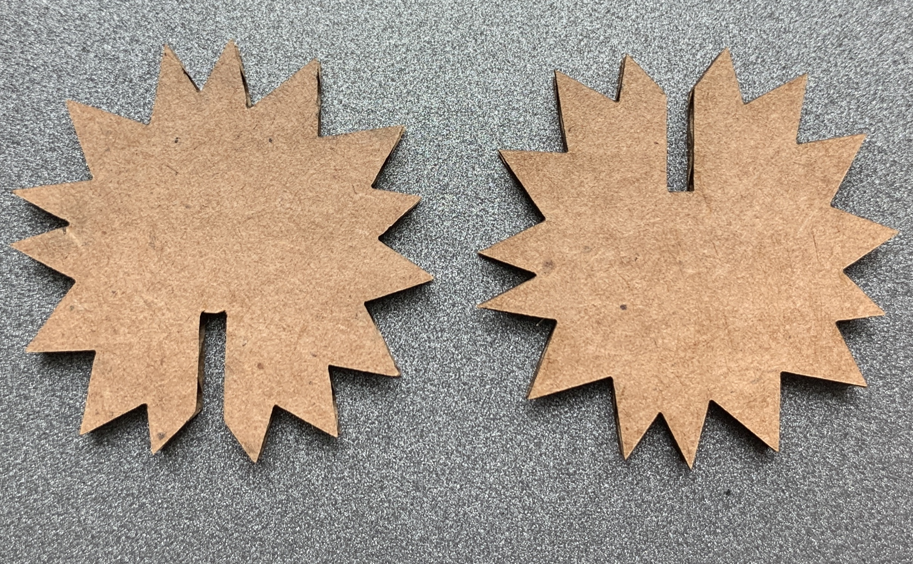

How I completed this assignment:
I first began this assignment by familiarizing myself with what a press kit is.
I then used the calipers to measure the thickness of my carboard. I wrote it down and began thinking of a kit design.
I wanted to make sure I understood what I was doing in Illustrator correctly and consulted D'Marcus. Once I had my design I added in the spaces I wanted to connect, using the caliper measurement thickness of the cardboard, to ensure the pieces would hold together. Since I this is my first time laser cutting, I reached out to Hannah since she has experience laser cutting.
I created two test pieces to check my dimensions and my measurments were correct and the pieces would hold. 
I had no issues with my test pieces and was able to move forward in printing the remaining pieces.